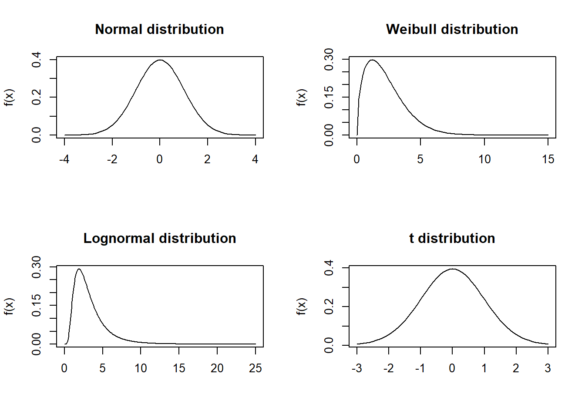
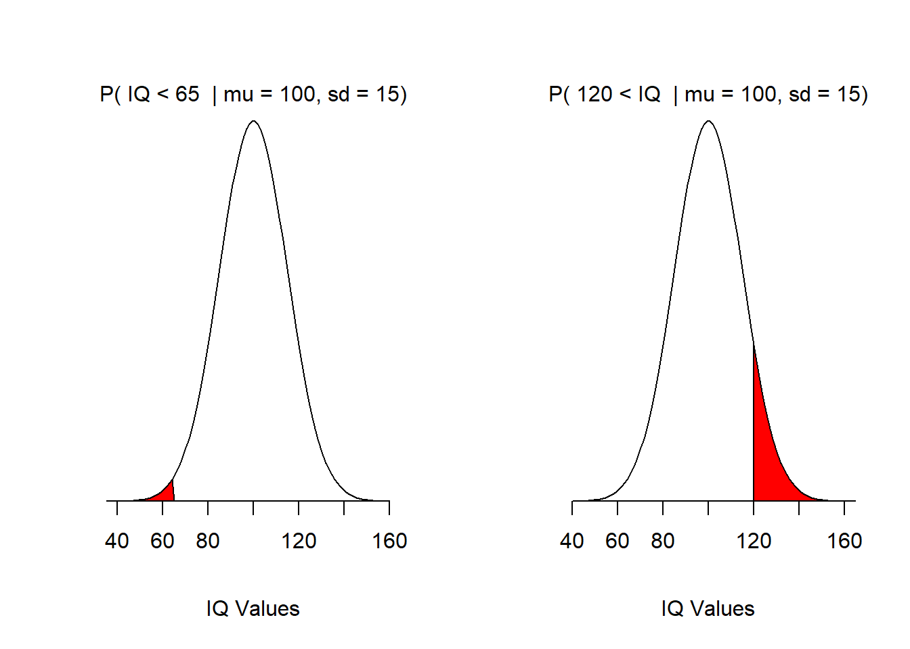
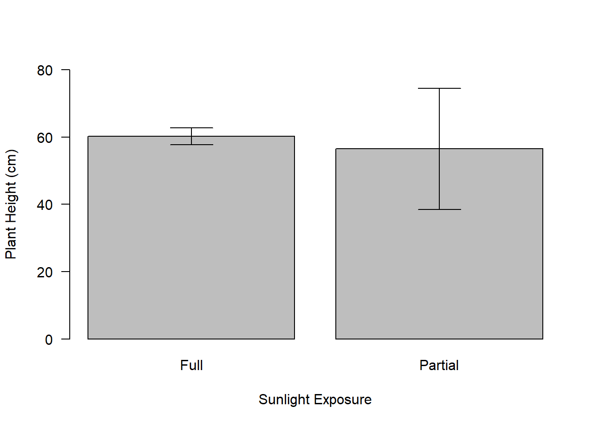
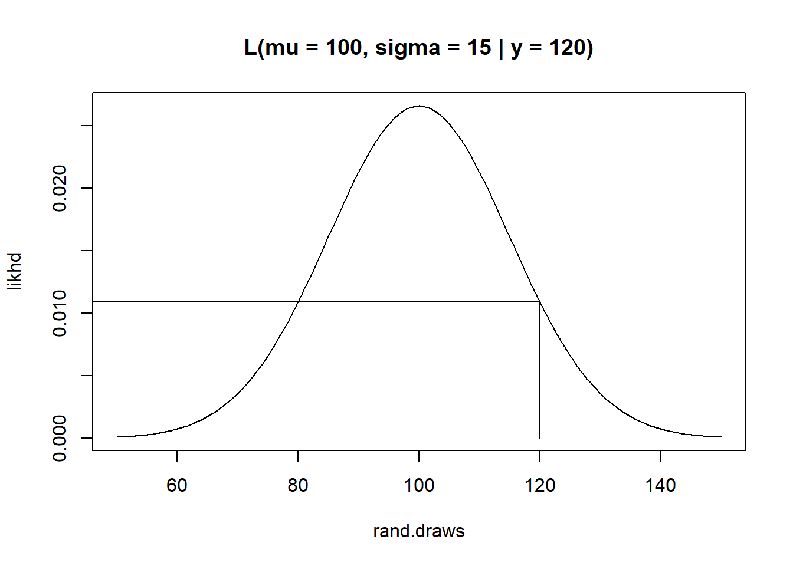
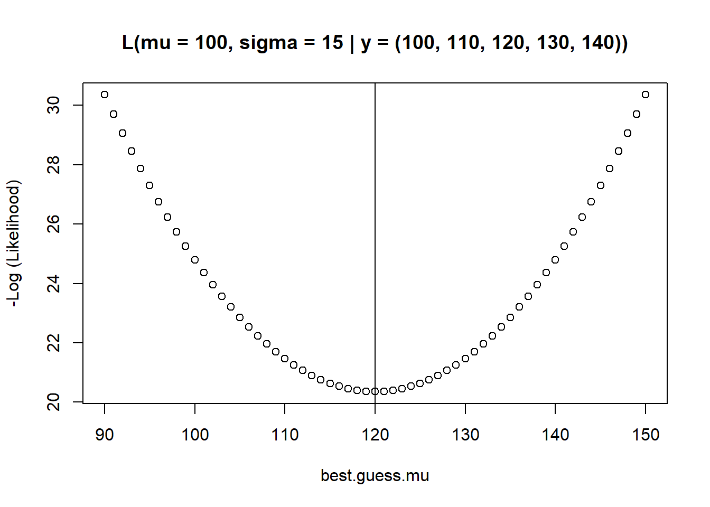

21 Two-Way Independent ANOVA
Like one-way ANOVA this is a comparison of means test. In this module we will examine multifactor ANOVA.
Multi-factorial ANOVA as a linear model
Hypotheses being tested
Interaction effects
Post-hoc tests
Non-parametric versions
21.1 What is Two-Way Independent ANOVA?
Two independent variables
- Two-way (n = 2) factors
Simultaneous analysis of two factors and measurement of mean response.
Terminology:
One factor termed A and one factor termed B.
a is the number of levels in A.
b is the number of levels in B.
21.2 Example of two-way ANOVA
Researchers have sought to examine the effects of various types of music on agitation levels in patients in early and middle stages of Alzheimer’s disease.
Patients were selected based on their form of Alzheimer’s disease. Three forms of music were tested: easy listening, Mozart, and piano interludes. The response variable agitation level was scored.
Here is the design:
| Group | Piano Interlude | Mozart | Easy Listening |
|---|---|---|---|
| Early Stage ALzheimer’s | 21 | 9 | 29 |
| 24 | 12 | 26 | |
| 22 | 10 | 30 | |
| 18 | 5 | 24 | |
| 20 | 9 | 26 | |
| Middle Stage Alzheimer’s | 22 | 14 | 15 |
| 20 | 18 | 18 | |
| 25 | 11 | 20 | |
| 18 | 9 | 13 | |
| 20 | 13 | 19 |
21.3 Hypotheses Being Tested
Three factor ANOVA:
- HO: Mean agitation is the same for each music type.
- HO : Mean agitation is the same for each Alzheimer’s stage.
- HO : Mean agitation is the same for all levels of music, independent of Alzheimer stage.
21.4 Multiway Factorial ANOVA Hypotheses Being Tested
| Popcorn | Oil Amt. | Batch | Yeild |
|---|---|---|---|
| Plain | Little | Large | 8.2 |
| Gourmet | Little | Large | 8.6 |
| Plain | Lots | Large | 10.4 |
| Gourmet | Lots | Large | 9.2 |
| Plain | Little | Small | 9.9 |
| Gourmet | Little | Small | 12.1 |
| Plain | Lots | Small | 10.6 |
| Gourmet | Lots | Small | 18.0 |
| Plain | Little | Large | 8.8 |
| Gourmet | Little | Large | 8.2 |
| Plain | Lots | Large | 8.8 |
| Gourmet | Lots | Large | 9.8 |
| Plain | Little | Small | 10.1 |
| Gourmet | Little | Small | 15.9 |
| Plain | Lots | Small | 7.4 |
| Gourmet | Lots | Small | 16.0 |
21.5 Hypotheses Being Tested
Three factor ANOVA:
- HO: Yield is the same in all three Batch sizes
- HO : Yield is the same in all three Oil amounts
- HO : Yield is the same in all three Popcorn types
- HO : The mean yield is the same for all levels of batch, independent of oil amount (Batch X Oil)
- HO : The mean yield is the same for all levels of Oil amount, independent of popcorn type (Oil X Type)
- HO : The mean yield is the same for all levels of batch, independent of popcorn type (Batch X Type)
- HO : Differences in mean Yield among the batch, oil amount, and popcorn type are independent of the other factors + (Batch X Type X Oil)
| Df | Sum Sq | Mean Sq | F value | Pr(>F) | |
|---|---|---|---|---|---|
| popcorn type | 1 | 3.062 | 3.062 | 0.1731 | 0.6883 |
| oil amount | 1 | 0.062 | 0.062 | 0.0035 | 0.9541 |
| batch size | 1 | 52.562 | 52.562 | 2.9717 | 0.1230 |
| popcorn type:oil amount | 1 | 27.562 | 27.562 | 1.5583 | 0.2472 |
| popcorn type:batch size | 1 | 14.062 | 14.062 | 0.7951 | 0.3986 |
| oil amount:batch size | 1 | 0.063 | 0.063 | 0.0035 | 0.9541 |
| popcorn type:oil amount:batch size | 1 | 1.563 | 1.563 | 0.0883 | 0.7739 |
| Residuals | 8 | 141.500 | 17.687 |
21.6 Benefit of Factorial Designs
1.) The experimental design is an efficient design to test multiple hypotheses simultaneously.
2.) We can look at how variables interact, this process is called ‘interaction’.
Show how the effects that one level of one group (or factor) might depend on the effects of level in another group.
Are often more interesting than main effects.
21.7 A worked example of factorial design
Testing the effects of the pH of soil and amount of sunlight exposure (full or partial) on mean plant height.
We will test:
21.8 Hypotheses Being Tested
- HO: Mean plant height is the same in all sunlight treatments.
- HO : Mean plant height is the same in all pH treatments.
- HO : There is no significant interaction of ph and sunlight.
21.9 Remeber the terminology
- Factor A (pH), levels = 6, 7, 8
- Factor B (Sun), levels = full, partial
The response is the height of the plant at the end of the experiment.
The experiment has two “levels” for the factor “B” (b = 2) and three “levels” for the factor “A” (a = 3).
Thus, there are \(ab = 3\times2=6\) unique combinations of sun and pH With each combination.
We have r = 8 observations for each combination. r is called the number of replicates, in each cell.
The total number of replicates (n) is:
\(N = abr = 3\times2\times8 = 48\).
The amounts \(Y_{i,j,k}\) is the amount of plant height for each replicate (k = 1 to 8) with sun i, (i = 1, 2) at pH j, (j = 1, 2, 3).
Treatment and level-specific data for the plant height (cm):
| pH (Factor A, a levels) | 6 | 6 | 7 | 7 | 8 | 8 |
|---|---|---|---|---|---|---|
| Sun (Factor B, b levels) | Full | Partial | Full | Partial | Full | Partial |
| 65 | 50 | 70 | 45 | 55 | 30 | |
| 70 | 55 | 65 | 60 | 65 | 30 | |
| 60 | 80 | 60 | 85 | 70 | 30 | |
| 60 | 65 | 70 | 65 | 55 | 55 | |
| 60 | 70 | 65 | 70 | 55 | 35 | |
| 55 | 75 | 60 | 70 | 60 | 20 | |
| 60 | 75 | 60 | 80 | 50 | 45 | |
| 55 | 65 | 50 | 60 | 50 | 40 | |
| Total | 485 | 535 | 500 | 535 | 460 | 285 |
| Mean | 60.625 | 66.875 | 62.50 | 66.875 | 57.50 | 35.625 |
| Variance | 24.55 | 106.70 | 42.86 | 156.70 | 50.00 | 117.41 |

21.10 Step 1: Calculate SST
\(Grand \: Mean = \bar{X} = 58.33\)
\(SS_T=\sum_{i=1}^{a}\sum_{j=1}^{b}\sum_{l=1}^{n}({X_{i,j,l} - \bar{X}})^2\)
\(SS_T=8966.66\)
21.11 Step 2: Calculate SSM
| pH (Factor A, a levels) | 6 | 6 | 7 | 7 | 8 | 8 |
|---|---|---|---|---|---|---|
| Sun (Factor B, b levels) | Full | Partial | Full | Partial | Full | Partial |
| Mean | 60.625 | 66.875 | 62.50 | 66.875 | 57.50 | 35.625 |
Here we evaluate main effects and interaction effects.
\(SS_M=n\sum_{i=1}^{a}\sum_{j = 1}^{b}({\bar{X}_{ij}}-\bar{X})^2\)
\(\mbox{SS}_\mbox{M}=8(60.625-58.33)^2+8(66.875-58.33)^2+8(62.5-58.33)^2+8(66.875-58.33)^2+8(57.5-58.33)^2+8(35.625-58.33)^2\)
\(\mbox{SS}_\mbox{M}=8(2.295)^2+8(8.545)^2+8(4.17)^2+8(8.545)^2+8(-0.83)^2+8(-22.705)^2\)
\(\mbox{SS}_\mbox{M}=42.1362+584.1362+139.1112+584.1362+5.5112+4124.1362\)
\(\mbox{SS}_\mbox{M}=5479.17\)
21.12 Step 2a: Calculate SSA
Mean “Full Sun”: 60.21 cm
| SSA | ||
|---|---|---|
| 65 | 70 | 55 |
| 70 | 65 | 65 |
| 60 | 60 | 70 |
| 60 | 70 | 55 |
| 60 | 65 | 55 |
| 55 | 60 | 60 |
| 60 | 60 | 50 |
| 55 | 50 | 50 |
Mean “Partial Sun”: 56.46 cm
| SSA | ||
|---|---|---|
| 50 | 45 | 30 |
| 55 | 60 | 30 |
| 80 | 85 | 30 |
| 65 | 65 | 55 |
| 70 | 70 | 35 |
| 75 | 70 | 20 |
| 75 | 80 | 45 |
| 65 | 60 | 40 |
\(SS_{A} = {rb}\sum_{i=1}^a(\overline{X}_{i} - \overline{X})^2\)
\(\mbox{SS}_\mbox{Sun}=24(60.21-58.33)^2+24(56.46-58.33)^2\)
\(\mbox{SS}_\mbox{Sun}=24(1.88)^2+24(-1.87)^2\)
\(\mbox{SS}_\mbox{Sun}=84.8256+83.9256\)
\(\mbox{SS}_\mbox{Sun}=168.75\)
21.13 Step 2b: Calculate SSB
- Factor B is pH.
pH = 6
Mean \(\mbox{pH}_6\) = 63.75
| SSB | |
|---|---|
| 65 | 50 |
| 70 | 55 |
| 60 | 80 |
| 60 | 65 |
| 60 | 70 |
| 55 | 75 |
| 60 | 75 |
| 55 | 65 |
pH = 7
Mean \(\mbox{pH}_7\) = 64.68
| SSB | |
|---|---|
| 70 | 45 |
| 65 | 60 |
| 60 | 85 |
| 70 | 65 |
| 65 | 70 |
| 60 | 70 |
| 60 | 80 |
| 50 | 60 |
pH = 8
Mean \(\mbox{pH}_8\) = 46.56
| SSB | |
|---|---|
| 55 | 30 |
| 65 | 30 |
| 70 | 30 |
| 55 | 55 |
| 55 | 35 |
| 60 | 20 |
| 50 | 45 |
| 50 | 40 |
\(SS_B = ra\sum_{j=1}^b(\overline{X}_{j} - \overline{X})^2\)
\(\mbox{SS}_\mbox{pH}=16(63.75-58.33)^2+16(64.68-58.33)^2+16(46.56-58.33)^2\)
\(\mbox{SS}_\mbox{pH}=16(5.42)^2+16(6.3575)^2+16(-11.7675)^2\)
\(\mbox{SS}_\mbox{pH}=470.0224+646.6849+2215.5849\)
\(\mbox{SS}_\mbox{pH}=3332.292\)

21.14 Step 2c: Calculate SS(AxB)
\(\mbox{SS}_\mbox{M}=\mbox{SS}_{\mbox{A}{\times}\mbox{B}} + \mbox{SS}_\mbox{A}+\mbox{SS}_\mbox{B}\)
\(\mbox{SS}_{\mbox{A}{\times}\mbox{B}}=\mbox{SS}_\mbox{M}-\mbox{SS}_\mbox{A}-\mbox{SS}_\mbox{B}\)
\(\mbox{SS}_{\mbox{Sun}{\times}\mbox{pH}}=\mbox{SS}_\mbox{M}-\mbox{SS}_\mbox{Sun}-\mbox{SS}_\mbox{pH}\)
\(=5479.167-168.75-3332.292\)
\(=1978.125\)
21.15 Step 3: Calculate SSR
The residual sum of squares is calculated in the same way as for one-way ANOVA .
Represents individual differences in performance or the variance that can’t be explained by factors that were systematically manipulated.
We saw in one-way ANOVA that the value is calculated by taking the squared error between each data point and its corresponding group mean.
So, we use the individual variances of each group and multiply them by one less than the number of people within the group (n).
We have the individual group variances: there were eight people in each group (therefore, n = 8).
\(\mbox{SS}_\mbox{R}=s^2_{group1}(n_1-1)+s^2_{group2}(n_2-1)+s^2_{group3}(n_3-1)+s^2_{group \: n}(n_n-1)\)
\(\mbox{SS}_\mbox{R}=s^2_{group1}(n_1-1)+s^2_{group2}(n_2-1)+s^2_{group3}(n_3-1)+s^2_{group4}(n_4-1)+s^2_{group5}(n_5-1)+s^2_{group6}(n_6-1)\)
\(\mbox{SS}_\mbox{R}=(24.55\times7)+(106.7\times7)+(42.86\times7)+(156.7\times7)+(50\times7)+(117.41\times7)\)
\(\mbox{SS}_\mbox{R}=171.85+746.9+300+1096.9+350+821.87\)
\(\mbox{SS}_\mbox{R}=3487.52\)
21.16 Degrees of Freedom and Mean Square Calculations
| Source | SS | df | MS |
|---|---|---|---|
| Factor A | \(SS_A\) | a-1 | \(\frac{SS_A}{a-1}\) |
| Factor B | \(SS_B\) | b-1 | \(\frac{SS_B}{b-1}\) |
| Factor A x B | \(SS_{AB}\) | (a-1)(b-1) | \(\frac{SS_{AB}}{(a-1)(b-1)}\) |
| Error | SSE | N-ab | \(\frac{SSE}{N-ab}\) |
| Total | SST | N-1 |
21.17 Interpreting Factorial ANOVA
| Response | Plant Growth | |||
|---|---|---|---|---|
| Sum Sq | Df | F value | Pr(>F) | |
| Sunlight | 169 | 1 | 2.0323 | 0.1614 |
| pH | 3332 | 2 | 20.0654 | 7.649e-07 |
| Sunlight:pH | 1978 | 2 | 11.9113 | 7.987e-05 |
| residuals | 3488 | 42 |
21.18 Interpretation: Main Effect pH

- There was a significant main effect of the amount of pH in the soil on the height of the plant, F(2, 42) = 20.07, p < 0.001
21.19 Interpretation: Main Effect Sun

- There was a non-significant main effect of sunlight exposure on the plant height, F(1, 42) = 2.03, p = 0.161.
21.20 Interpretation: Interaction Effects

- There was a significant interaction between the amount of pH in the soil and the amount of sunlight exposure, on the height of the plant, F(2, 42) = 11.91, p < .001.
- Non-parallel lines indicate such an interaction: For low pH full and partial sunlight, scores do not change much.
- At a high pH, partial sunlight scores plummet but full sunlight scores remain fairly high. So, the interaction is caused by a difference between sunlight exposure in the height of plants.
21.21 Factorial ANOVA as Regression
| pH | 6 | 6 | 7 | 7 | 8 | 8 |
|---|---|---|---|---|---|---|
| Sunlight | Full | Partial | Full | Partial | Full | Partial |
| 65 | 50 | 70 | 45 | 55 | 30 | |
| 70 | 55 | 65 | 60 | 65 | 30 | |
| 60 | 80 | 60 | 85 | 70 | 30 | |
| 60 | 65 | 70 | 65 | 55 | 55 | |
| 60 | 70 | 65 | 70 | 55 | 35 | |
| 55 | 75 | 60 | 70 | 60 | 20 | |
| 60 | 75 | 60 | 80 | 50 | 45 | |
| 55 | 65 | 50 | 60 | 50 | 40 | |
| Total | 485 | 535 | 500 | 535 | 460 | 285 |
| Mean | 60.625 | 66.875 | 62.50 | 66.875 | 57.50 | 35.625 |
| Variance | 24.55 | 106.70 | 42.86 | 156.70 | 50.00 | 117.41 |
\(outcome_i = (\mbox{model})+\mbox{error}_i\)
\(plant height_i=(b_0+b_{1}\mbox{Sunlight}_i+b_2\mbox{pH}_i)+\varepsilon_i\)
\(plant height_i=(b_0+b_1A_i+b_2B_i+b_3AB_i)+\varepsilon_i\)
\(plant height_i=(b_0+b_1Sunlight_i+b_2pH_i+b_3interaction_i)+\varepsilon_i\)
How do we code the interaction term?
Multiply the variables
A x B
| Sunlight | pH | Dummy (Sunlight) | Dummy (pH) | Interaction | Mean |
|---|---|---|---|---|---|
| Partial | 6 | 0 | 0 | 0 | 66.875 |
| Partial | 8 | 0 | 1 | 0 | 35.625 |
| Full | 6 | 1 | 0 | 0 | 60.625 |
| Full | 8 | 1 | 1 | 1 | 57.500 |
\(plant height_i=(b_0+b_1Sunlight_i+b_2pH_i+b_3interaction_i)+\varepsilon_i\)
\(\bar{Y}_{partial,6}=b_0+(b_1\times0)+(b_2\times0)+(b_3\times0)\)
\(b_0=\bar{Y}_{partial,6}\)
\(b_0=66.875\)
| Sunlight | pH | Dummy (Sunlight) | Dummy (pH) | Interaction | Mean |
|---|---|---|---|---|---|
| Partial | 6 | 0 | 0 | 0 | 66.875 |
| Partial | 8 | 0 | 1 | 0 | 35.625 |
| Full | 6 | 1 | 0 | 0 | 60.625 |
| Full | 8 | 1 | 1 | 1 | 57.500 |
\(\bar{Y}_{Full,6}=b_0+(b_1\times1)+(b_2\times0)+(b_3\times0)\)
\(\bar{Y}_{Full,6}=b_0+b_1\)
\(\bar{Y}_{Full,6}=\bar{Y}_{partial,6}+b_1\)
\(b_1=\bar{Y}_{Full,6}-\bar{Y}_{partial,6}\)
\(b_1=60.625-66.875\)
\(b_1=-6.25\)
| Sunlight | pH | Dummy (Sunlight) | Dummy (pH) | Interaction | Mean |
|---|---|---|---|---|---|
| Partial | 6 | 0 | 0 | 0 | 66.875 |
| Partial | 8 | 0 | 1 | 0 | 35.625 |
| Full | 6 | 1 | 0 | 0 | 60.625 |
| Full | 8 | 1 | 1 | 1 | 57.500 |
\(\bar{Y}_{partial,4 \: pH}=b_0+(b_1\times0)+(b_2\times1)+(b_3\times0)\)
\(\bar{Y}_{partial,4 \: pH}=b_0+b_2\)
\(\bar{Y}_{partial,4 \: pH}=\bar{Y}_{partial,6}+b_2\)
\(b_2=\bar{Y}_{partial,4 \: pH}-\bar{Y}_{partial,6}\)
| Sunlight | pH | Dummy (Sunlight) | Dummy (pH) | Interaction | Mean |
|---|---|---|---|---|---|
| Partial | 6 | 0 | 0 | 0 | 66.875 |
| Partial | 8 | 0 | 1 | 0 | 35.625 |
| Full | 6 | 1 | 0 | 0 | 60.625 |
| Full | 8 | 1 | 1 | 1 | 57.500 |
\(\bar{Y}_{Full,4 \: pH}=b_0+(b_1\times1)+(b_2\times1)+(b_3\times1)\)
\(\bar{Y}_{Full,4 \: pH}=b_0+b_1+b_2+b_3\)
\(\bar{Y}_{Full,4 \: pH}=\bar{Y}_{partial,6}+(\bar{Y}_{Full,6}-\bar{Y}_{partial,6})+(\bar{Y}_{partial,4 \: pH}-\bar{Y}_{partial,6})+b_3\)
\(\bar{Y}_{Full,4 \: pH}=\bar{Y}_{Full,6}+\bar{Y}_{partial,4 \: pH}-\bar{Y}_{partial,6}+b_3\)
\(b_3=\bar{Y}_{partial,6}-\bar{Y}_{Full,6}+\bar{Y}_{Full,4 \: pH}-\bar{Y}_{partial,4 \: pH}\)
\(b_3=66.875-60.625+57.500-35.625\)
\(b_3=28.125\)
21.22 Interaction Effects
Experiment: we are interested in oxygen consumption of two species of limpets in different concentration of seawater.
- Factor A is the species of limpet (levels, a)
- Factor B is the concentration of SW as a function of maximum salinity - 100, 75, and 50 % (levels, b)
| Completed anova | |||
|---|---|---|---|
| Source of variation | df | SS | MS |
| Species | 1 | 16.6380 | 16.638 ns |
| salinities | 2 | 10.3566 | 5.178 ns |
| Sp X Sal | 2 | 194.8907 | 97.445 ** |
| Error | 42 | 401.5213 | 9.560 |
| Total | 47 | 623.4066 |
When the two factors are identified as A and B, the interaction is identified as the A X B interaction.
Variability not accounted for by A and B alone.
Interaction: The effect of one factor in the presence of a particular level of another factor.
There is an interaction between two factors if the effect of one factor depends on the levels of the second factor.
| Species | Species | ||
|---|---|---|---|
| Seawater Concentration | A. scabra | A. digitalis | Mean |
| 100% | 10.56 | 7.43 | 9.00 |
| 75% | 7.89 | 7.34 | 10.11 |
| 50% | 12.17 | 12.33 | 9.76 |
| Mean | 10.21 | 9.03 | 9.62 |

The response to salinity differs between the two species
At 75% salinity A. scabra consumes the least oxygen and A. digitalis consumes the most.
Therefore a simple statement about the species response to salinity is not clear; all we can really say is:
The pattern of response to changes in salinity differed in the two species.
The difference among levels of one factor is not constant at all levels of the second factor
“It is generally not useful to speak of an individual factor effect - even if its F is significant - if there is a significant interaction effect” - Zar
21.23 Post-hoc Tests
Tukey test - balanced, orthogonal designs
- Step one: is to arrange and number all five sample means in order of increasing magnitude
- Calculate the pairwise difference in sample means.
We use a t-test “analog” to calculate a q-statistic
Scheffe’s test
Examine multiple contrasts:
- ideas is to compare combinations of samples to each other instead of the comparison among individual k levels.
Compare the mean outflow volume of four different rivers: 5 vs 1,2,3,4
\(H_0:\mu_2/3+\mu_4/3+\mu_3/3-\mu_5=0\)
\(H_0:(\mu_2+\mu_4+\mu_3)/3=\mu_5\)
\(c_2=\frac{1}{3}, \: c_4=\frac{1}{3}, \: c_3=\frac{1}{3}, \: and \: c_5=-1\)
Alternatives multiple contrasts:
\(H_0:(\mu_1+\mu_5)/2-(\mu_2+\mu_4+\mu_3)/3=0\)
\(H_0:\mu_1-(\mu_2+\mu_4+\mu_3)/3\)
Test Statistic:
\(s=\frac{|\sum c_i\bar{Y}_i|}{SE}\)
- Where
\(SE=\sqrt{s^2(\sum \frac{c^2_i}{n_i})}\)
- and the critical value of the test is
\(S_{\alpha}=\sqrt{(k-1)F_{\alpha(1),k-1,N-k}}\)
21.24 Non-Parametric Tests
Violations of the assumptions
We assume equality of variance - ANOVA is a robust test.
Robust to unbalanced design.
How to deal with outliers:
- use in analysis if they are valid data.
Test of normality: Shapiro Wilks
Test of equality of variance: Bartletts test.
Nonparametric analysis of variance.
If k > 2
Kruskal-Wallis test - analysis of variance by rank
Power increases with sample size.
If k = 2 the Kruskal-Wallis is equivalent to the Mann-Whitney test.
\(H=\frac{12}{N(N+1)}\sum ^k_{i=1}\frac{R^2_i}{n_i}-3(N+1)\)
If there are tied ranks
- H needs to be corrected using a correction factor C.
\(C=1-\frac{\sum t}{N^3-N}\)
\(H_c=\frac{H}{C}\)
\(\sum t=\sum (t^3_i-t_i)\)
- ti is the number of tied ranks.
A limnologist obtained eight containers of water from each of four ponds. The pH of each water sample was measured. The data are arranged in ascending order within each pond. (One of the containers from pond 3 was lost, so n3 = 7, instead of 8; but the test procedure does not require equal numbers of data in each group.) The rank of each datum is shown parenthetically.
- H0: pH is the same in all four ponds.
- HA: pH is not the same in all four ponds.
| Pond 1 | Pond 2 | Pond 3 | Pond 4 |
|---|---|---|---|
| 7.68 (1) | 7.71 (6*) | 7.74 (13.5*) | 7.71 (6*) |
| 7.69 (2) | 7.73 (10) | 7.75 (16) | 7.71 (6*) |
| 7.70 (3.5*) | 7.74 (13.5*) | 7.77 (18) | 7.74 (13.5) |
| 7.70 (3.5*) | 7.74 (13.5*) | 7.78 (20*) | 7.79 (22) |
| 7.72 (8) | 7.78 (20*) | 7.80 (23.5*) | 7.81 (26*) |
| 7.73 (10*) | 7.78 (20*) | 7.81 (26*) | 7.85 (29) |
| 7.73 (10*) | 7.80(23.5*) | 7.84 (28) | 7.87 (30) |
| 7.76 (17) | 7.81 (26*) | 7.91 (31) |
| n1 =8 | n2 =8 | n3 =7 | n4 =8 |
|---|---|---|---|
| R1 =55 | R2 =132.5 | R3 =145 | R4 =163.5 |
*tied ranks
\(H=\frac{12}{N(N+1)}\sum ^k_{i=1}\frac{R^2_i}{n_i}-3(N+1)\)
\(=\frac{12}{32(32)}[\frac{55^2}{8}+\frac{132.5^2}{8}+\frac{145^2}{7}+\frac{163.5^2}{8}]-3(32)\)
\(=11.876\)
| Pond 1 | Pond 2 | Pond 3 | Pond 4 |
|---|---|---|---|
| 7.68 (1) | 7.71 (6*) | 7.74 (13.5*) | 7.71 (6*) |
| 7.69 (2) | 7.73 (10) | 7.75 (16) | 7.71 (6*) |
| 7.70 (3.5*) | 7.74 (13.5*) | 7.77 (18) | 7.74 (13.5) |
| 7.70 (3.5*) | 7.74 (13.5*) | 7.78 (20*) | 7.79 (22) |
| 7.72 (8) | 7.78 (20*) | 7.80 (23.5*) | 7.81 (26*) |
| 7.73 (10*) | 7.78 (20*) | 7.81 (26*) | 7.85 (29) |
| 7.73 (10*) | 7.80(23.5*) | 7.84 (28) | 7.87 (30) |
| 7.76 (17) | 7.81 (26*) | 7.91 (31) |
| n1 =8 | n2 =8 | n3 =7 | n4 =8 |
|---|---|---|---|
| R1 =55 | R2 =132.5 | R3 =145 | R4 =163.5 |
*tied ranks
\(\sum t=\sum (t^3_i-t_i)\)
\(\sum t=(2^3-2)+(3^3-3)+(3^3-3)+(4^3-4)+(3^3-3)+(2^3-2)+(3^3-)\)
\(\sum t=168\)
| Pond 1 | Pond 2 | Pond 3 | Pond 4 |
|---|---|---|---|
| 7.68 (1) | 7.71 (6*) | 7.74 (13.5*) | 7.71 (6*) |
| 7.69 (2) | 7.73 (10) | 7.75 (16) | 7.71 (6*) |
| 7.70 (3.5*) | 7.74 (13.5*) | 7.77 (18) | 7.74 (13.5) |
| 7.70 (3.5*) | 7.74 (13.5*) | 7.78 (20*) | 7.79 (22) |
| 7.72 (8) | 7.78 (20*) | 7.80 (23.5*) | 7.81 (26*) |
| 7.73 (10*) | 7.78 (20*) | 7.81 (26*) | 7.85 (29) |
| 7.73 (10*) | 7.80(23.5*) | 7.84 (28) | 7.87 (30) |
| 7.76 (17) | 7.81 (26*) | 7.91 (31) |
| n1 =8 | n2 =8 | n3 =7 | n4 =8 |
|---|---|---|---|
| R1 =55 | R2 =132.5 | R3 =145 | R4 =163.5 |
*tied ranks
\(\sum t=\sum (t^3_i-t_i)\)
\(\sum t=(2^3-2)+(3^3-3)+(3^3-3)+(4^3-4)+(3^3-3)+(2^3-2)+(3^3-)\)
\(\sum t=168\)
\(C=1-\frac{\sum t}{N^3-N}=1-\frac{168}{31^3-31}=1-\frac{168}{29760}=0.9944\)
\(H_c=\frac{H}{C}=\frac{11.876}{0.9944}=11.943\)
\(\nu=k-1=3\)
\(F=\frac{(N-k)H_c}{(k-1)(N-1-H_c)}=\frac{(31-4)(11.943)}{(4-1)(31-1-11.943)}=5.95\)
\(F_{0.05(1),3,26}=2.98\)
Reject H0